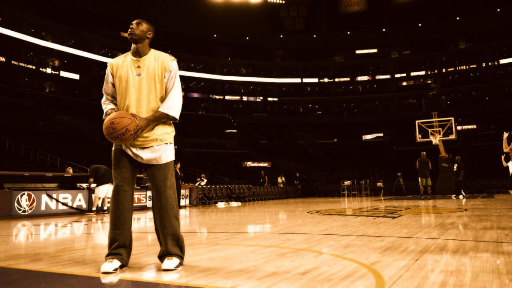

The great Kobe Bryant was an athlete of the first degree. He was one of basketball’s most accomplished shooting guards and played 20 seasons with the Los Angeles Lakers, which comprised his entire athletic career right out of high school. He could arguably be considered the sport’s GOAT (greatest of all time).
Of course, the debate over the professional basketball GOAT is decades-long, but whether you believe it’s Kobe Bryant, Michael Jordan, LeBron James, Larry Bird, Magic Johnson, Kareem Abdul-Jabbar or any of the other b-ball greats, they all got there because they put their entire heart into each game.
Similarly, when you make the decision to do whatever you've chosen to do, whether in life or in business, it's important to devote ever-increasing amounts of energy to that single idea. Believe that failure is not an option. This can often be the difference between making a modest achievement of your idea and turning it into the GOAT in business.
To be the greatest, you must have a vision for yourself and your team. To develop that vision, you must first adopt the right mindset. Bryant referred to it as "Mamba mentality" — trying to get better every day at what you're doing.
So how do you develop Mamba mentality in order to be the best in life and business?
Be Fearless
In his rookie year, Bryant shot four airballs in a playoff game with the Utah Jazz. What if he had given up then? What if he’d been discouraged by that? This is what former LA Lakers point guard, coach and general manager Jerry West had to say about it:
“I really thought that was a defining moment in his career ... If somebody would have shot an airball on our team and they had shot a second one, they wouldn't shoot a third one. He was fearless. I think that’s one of the things that spurred him to greatness. He wasn’t going to allow himself to fail.”
So what are you not going to allow yourself to do? Fear is temporary, but regret is forever.
Give It Your Heart
In a love letter to basketball, Bryant wrote, “You asked for my hustle/I gave you my heart.”
No matter what you do in life, if you want to succeed, you need to do more than be the first one in and the last one out. You need to give it your heart — everything you have.
Bryant said that “everything negative — pressure, challenges — is all an opportunity for me to rise.”
Bryant knew that life wasn’t going to hand him success. He loved the game! And when you love something—when you want it badly enough — you can’t help but put all your effort, skill, knowledge, drive and guts into it. In other words, you’ll give it your heart.
So what is heart? It’s doing whatever it takes to win, whether you’re on the court or waiting on the bench, whether you’re a boss or a gopher.
Bryant went on to become a venture capitalist. He was a brand-builder; an investor with a vision. His empire was built on that same devotion to winning that he used on the court.
If you’re in business or you want to start a business, start by employing the basic rules for success: identify, focus, build, opportunize.
Build A Good Team
In business, you can’t do it alone. When the Lakers found Bryant, they found talent and someone who was willing to be a rower for the team. Build a team around you. Find the right people to help you achieve your company’s goal.
Take it from executive consultant Patrick Lencioni: “If you could get all the people in an organization rowing in the same direction, you could dominate any industry, in any market, against any competition, at any time.”
This isn't always easy, though. According to a survey of nearly 750 CEOs and 800 senior executives by leadership think tank The Conference Board, “attracting and retaining talent ranks as their top internal concern.”
Bryant knew the importance of a good team and working with the right people. “You’ve got to have strong entrepreneurs,” he said in an interview with CNBC. “That's really the key for us is looking at the people.”
Make Your Own Luck
Sometimes, you just get lucky. How do you get lucky? You make your own luck. If you've worked hard and hustled, if you’ve put in the time and heart, you'll be ready when the opportunities show themselves. In other words, you'll be ready to opportunize. It's called being in the right place at the right time. Here's how you do it:
- You need to be willing to walk through the muck longer than anyone else.
- You need to position yourself to be lucky. Many an opportunity will be missed or go virtually unnoticed if you're not prepared.
- Don’t be just a passenger. Get in the driver’s seat of your life’s journey.
- Be a company/team rower, someone who acts like a boss, always doing what’s best for the team.
- Try to remember why you want to succeed, what success means to you in terms of monetary reward, recognition, personal satisfaction and freedom to be your own person.
- Don't ever play victim to anyone. Often we are our own worst enemy because we continue to play the roles we're used to even if they are not making us happy. There's plenty of success available for everyone, and you will define your success by your actions.
Those who spend their time focused on their goals and are willing to walk through the fire to get what they want will be their own superstars.
Conclusion
Kobe Bryant had a vision for himself and his team. If you’re ready to take up the challenge, there’s no doubt that your vision, hustle and heart will create extraordinary outcomes for your business, turning you and your team into the GOAT.
Article by Forbes.com